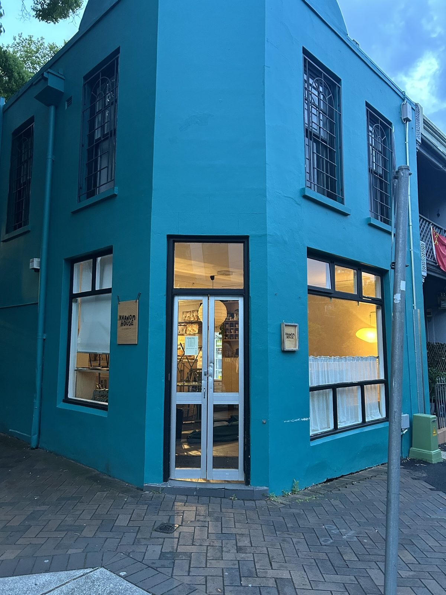
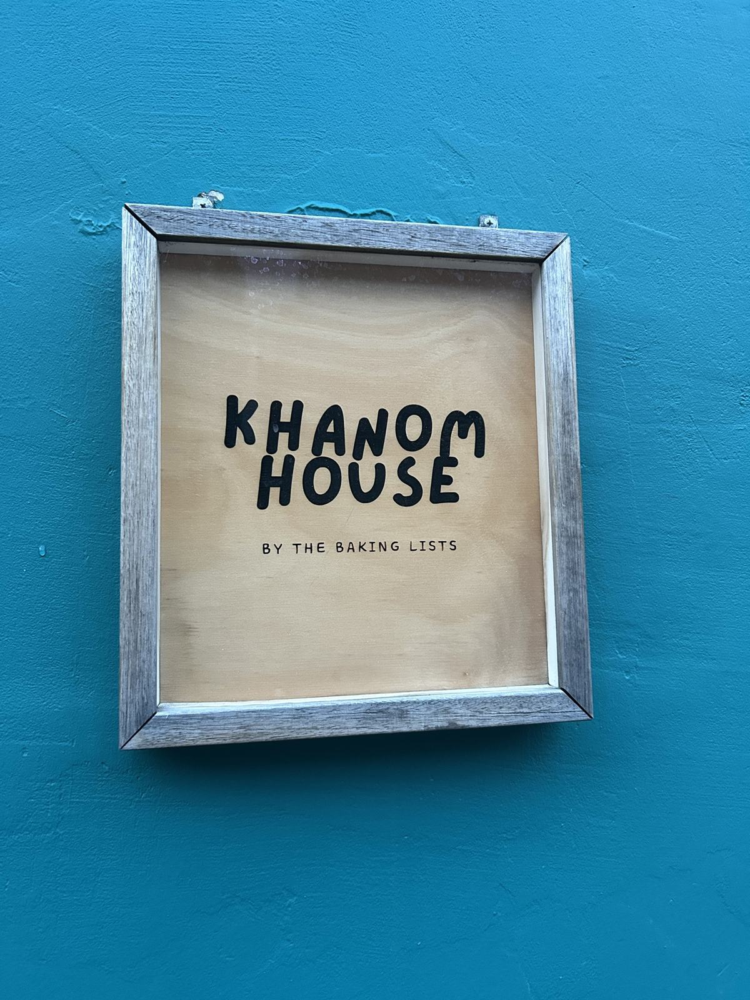

Khanom House: pastry, perfect coffee and a planning hour
Khanom House is a little teal bakehouse in Chippendale, Sydney. A perfect coffee, a ham and cheese pastry, and an hour to plan my week.
· Khanom House by The Baking ListsLast weekend I was craving pastry. I also needed to get out of the house, because I plan best in coffee shops, and my diary needed some serious attention.
So I packed my diary and headed to Khanom House, a little bakehouse in Chippendale.
Perfect coffee, a quiet table outside, and an hour to think. Sometimes that’s all the productivity system you need.
A hidden gem on the corner
You can’t miss it once you find it: a teal corner building with its name on little wooden signs. Khanom House is by The Baking Lists, and it’s a real hidden gem.

It attracts a lot of Instagrammers, and it’s easy to see why. The cakes, the products and the drinks are made to be photographed. They’re known for their matcha, so if that’s your thing, put it on your list.
What I had
I was craving savoury, and there wasn’t a lot of savoury choice. I went with the ham and cheese pastry you can see in the photo. Honestly, it could have been more flavourful and softer.
The coffee was absolutely perfect.
The Tech Style angle: a planning spot
I didn’t come to work on a laptop. This was a pen-and-paper session: me, my diary and a coffee, planning out my week of content.
I sat outside, out on the street, and it was exactly what I needed. Some time to myself to think, with nobody hurrying me along.
This was a laptop-free visit, so I can’t tell you about wifi or power points. But for an hour of planning with a coffee, the outside tables are lovely.
The diary everyone asks about
One of the women working there asked me where I got my diary. It’s a kikki.K diary I bought last year, and she loved the same things about it that I do.
- It’s spiral bound. It lies flat on a small café table, and you can fold it back on itself.
- It covers more than one year. I can plan ahead without waiting for a new diary.
For someone who plans in cafés, those two things matter more than any app feature.

Who it’s for
- Matcha lovers: it’s their speciality.
- Pastry cravings: especially sweet ones.
- Planners and thinkers: grab an outside table and take an hour for yourself.
- Instagrammers: you’ll fit right in.
If you’re after a big savoury menu, keep your expectations small.
My verdict: 7/10. A hidden gem in Chippendale with a perfect coffee and a great outside table for planning your week. It loses points for the small savoury choice and a pastry that needed more flavour. Come for the coffee and the matcha, and stay for the thinking time.